Characters
Characters Places
Places Stories
Stories Species
Species Organizations
Organizations Glossary
Glossary Transportation
Transportation Monsters
Monsters Jobs
Jobs Summons
Summons Items
Items Magic/Skills
Magic/Skills Weapon Types
Weapon Types In-Crossovers
In-Crossovers Ex-Crossovers
Ex-Crossovers Release Dates
Release Dates Name Origins
Name Origins Famous Moments
Famous Moments Music Database
Music Database Features
Features Game Help
Game Help Game Evolution
Game Evolution Square Art
Square Art Fan Flash
Fan Flash Final Fantasy Forums
Final Fantasy Forums Updates
Updates Site Info
Site Info Feedback
Feedback Full Index
Full Index Links
Links Staff
Staff| Image | Name | Description |
|---|---|---|
| 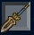 | Obelisk (9, 11, 12, Tactics), Oberisk (Tactics-PSX) | A fairly strong spear/pole. |
| 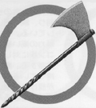 | Ogre Axe (2, 4, 5) | Powerful axe. |
| 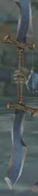 | Ogre Nix/Ogrenix (6, TA2), Organics (7), The Ogre (9, 10) | A medium-strength sword/axe/claw. In 10 it had multiple attack/magic attack raises. In FF12 it is the name of one of the Resistance ships. |
| 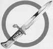 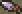 | Orichalcon (2, 3, 5, 8, 9, 12, Tactics), Orichalcum Dirk (TA2) | A fairly strong knife. In 8 this item teaches "Vit+40%". In 12 it's a loot item. |
| 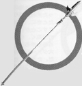 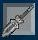 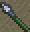 | Partisan (5, 6, 7, 9, 11, 12, Tactics, TA2) | Fairly strong spear. |
| X | Perseus Bow (12, 12RW, Tactics, TA, TA2) | One of the strongest bows in the game. |
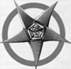  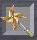 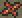 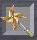 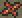 | Pinwheel (5, 7, 8, 11), Fuma (4), Ninja Star (4a, 6), Fuma Shuriken (Tactics) | Powerful throwing weapon. |
| 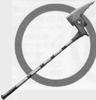 | Poison Axe (2, 5), Venom Axe (4) | Poisons the enemy. |
| 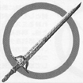 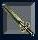 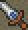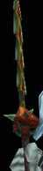 | Ragnarok (3, 4, 5, 6, 7, 9, 10, 11, 12, Tactics, TA2) | This sword is generally the strongest weapon in the series; it sometimes has effects like casting Flare (it adds Immobilize in 12). It also appears as transportation in 8 and as an accessory in X-2. |
| 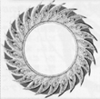 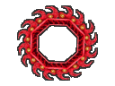 | Rising Sun (5, 6, 7, 8, 9, TA2) | A throwing weapon which can attack from the back row with equal damage. Unequippable in 9 but used in "Throw" command. A claw weapon in TA2. |
| 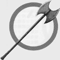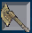 | Rune Axe (2, 3, 4, 5, 11) | Ultimate axe. |
| 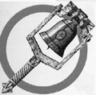 | Rune Bell (3, 5) | Most powerful bell. |
| 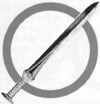 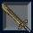 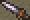 | Rune Blade/Runeblade (1, 6, 7, 9, 11, 12, 12RW, Tactics), Rune Sword (1n), Rune Edge (5), Rune Steel/Runemaster (10) | In several games, uses MP to inflict critical blows. Raises magic power in other games. |
| 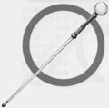 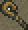 | Sage Staff (4, 5, Tactics-PSX), Life Staff (4a), Staff of the Magi (Tactics), Sage Crosier (TA2) | Ultimate staff raises magic power. |
| 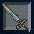 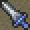 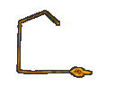 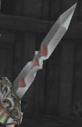 | Save The Queen (8, 9, 10, 11, 12, 12RW, Tactics, TA2) | Quistis's best whip in 8, Beatrix's sword in 9, Meliadoul's sword in Tactics. Had Double AP and Double Overdrive in 10. A strong Greatsword in 12. |
| 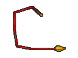 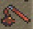 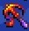 | Scorpion Tail (8, 12, Tactics, TA, TA2) | A medium-to-strong whip/mace. The best hammer in 12. |
| 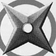 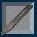 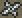 | Shuriken (3, 4, 5, 6, 7, 11, Tactics) | A ninja throwing star. |
| 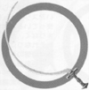 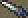 | Sleep Sword (2, 4, Tactics-PSX), Slumber Sword (5), Sleep Blade (Tactics) | Puts enemies to sleep. |
| 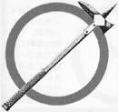 | Thor Hammer (1, 3, 5), Mjolnir (TA2) | A run-of-the-mill hammer. |
| 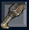 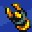 | Tiger Fangs (6, 9, 11, TA, TA2) | Strong claws. |
| 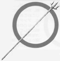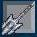 | Trident (2, 5, 6, 7, 9, 10, 11, 12, 12RW, TA2) | A Water- or Ice-elemental spear. In 10 it had three elemental attacks. |
| 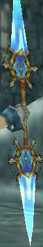 | Ultima Weapon (1[GBA], 7, 9, 10j, 12, 12RW, 8 non-usable) | A smooth, shiny blade; one of the strongest in the game. In 8 it was held by the monster "Ultima Weapon". In 10 this was translated as Caladbolg, Tidus's Ultimate Weapon. Usually not a Knight Sword. |
| 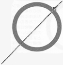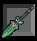 | Wind Spear (3, 4, 5, 11) | Wind-elemental spear. |
| 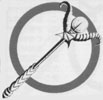 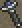 | Wizard Rod (5, 9, Tactics), Magus Rod (6), Staff of the Magi (12), Wizard's Rod (12RW) | Very strong rod, often the strongest in the game. |
| 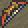 | Yoichi Bow (2, 3, 4, 5, 12, Tactics, TA2), Yoichinoyumi (11), Samurai Bow (4a) | Ultimate bow most of the time; a strong bow otherwise. |
| X | Zantetsuken (4, 5, 6, 7, 8, 9) | This is Odin's Steel-Bladed Sword; Gilgamesh inherits it in 8. |
| 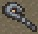 | Zeus Mace (12, 12RW, TA, TA2), Mace of Zeus (9, Tactics) | The most powerful (or second-most-powerful) staff/mace. |
| Zorlin Shape (9, Tactics-PSX, TA), Zwill Straightblade (Tactics), Zwillblade (TA2) | One of the most powerful thief knives. |
Final Fantasy, all games and animation bearing the Final Fantasy name, and all characters in said games or animation are copyright their respective creators, including but not limited to Squaresoft, Square Enix, Square EA, Tokyo TV, and ADV Films.